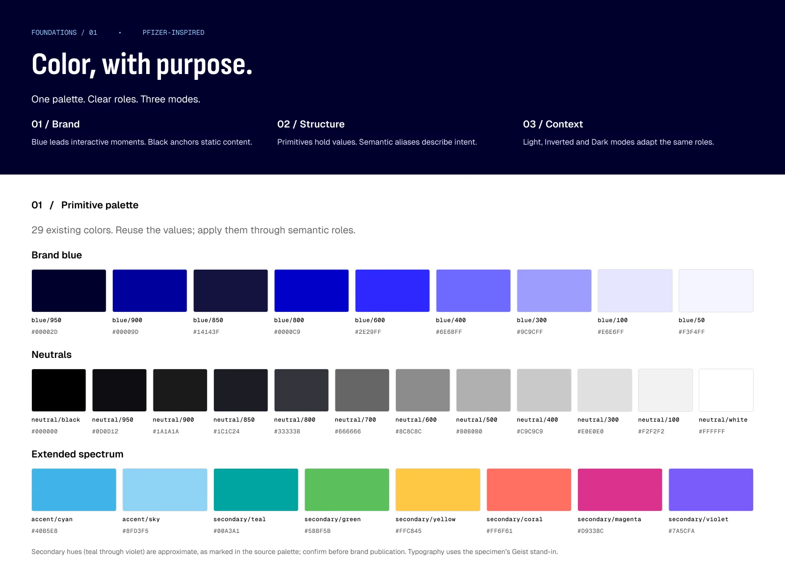
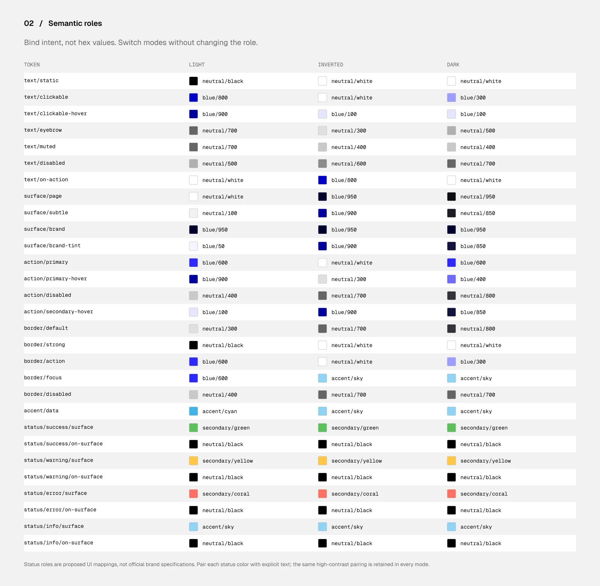
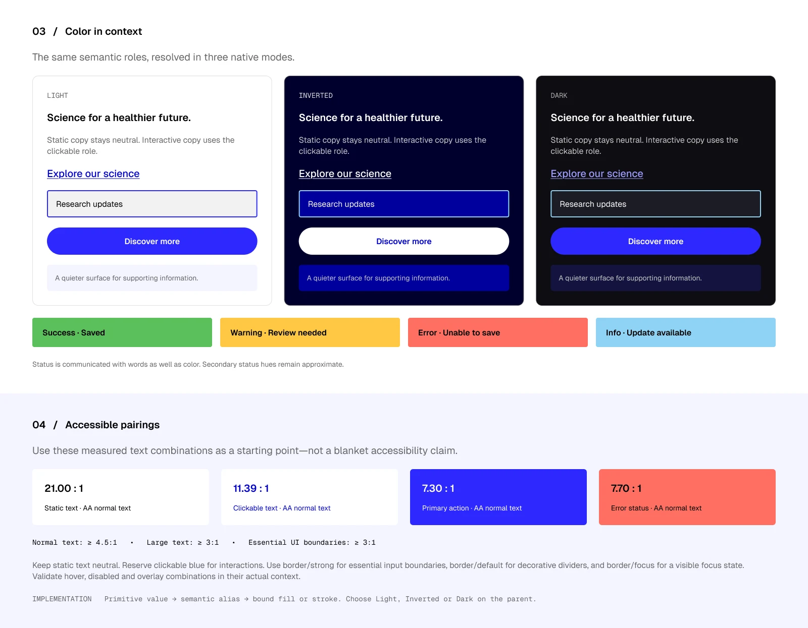
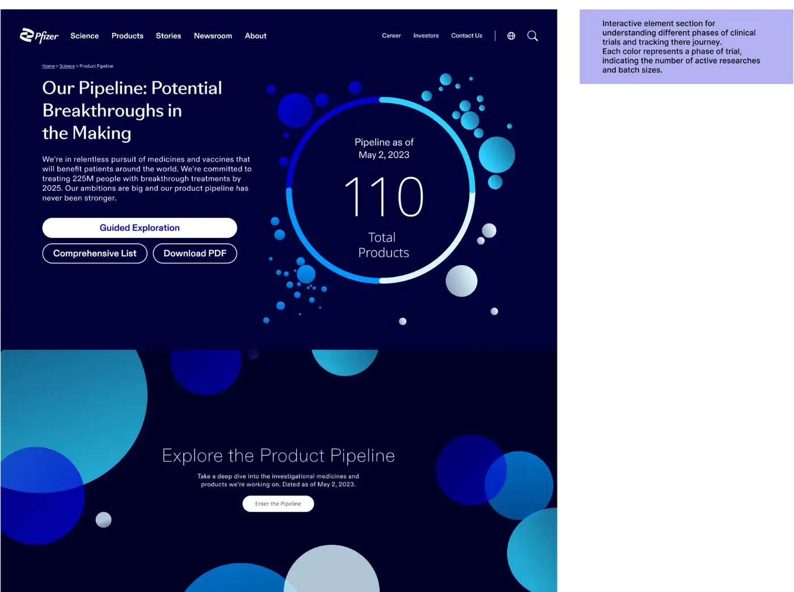
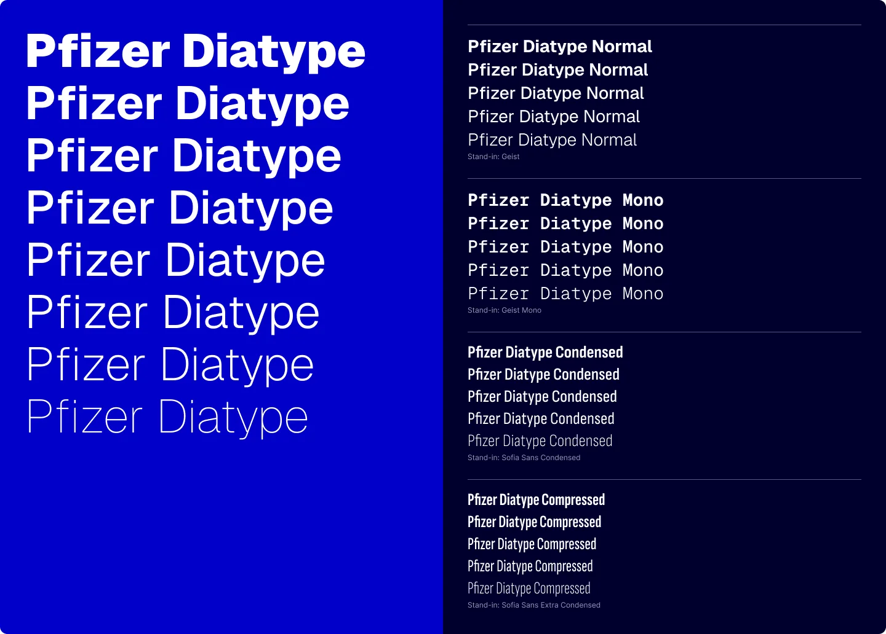
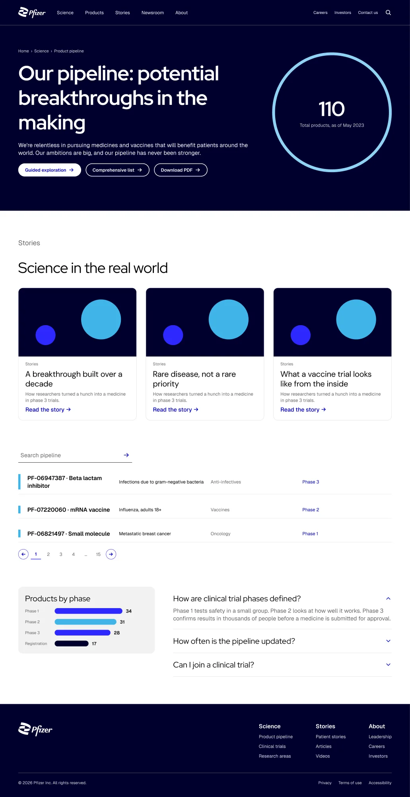
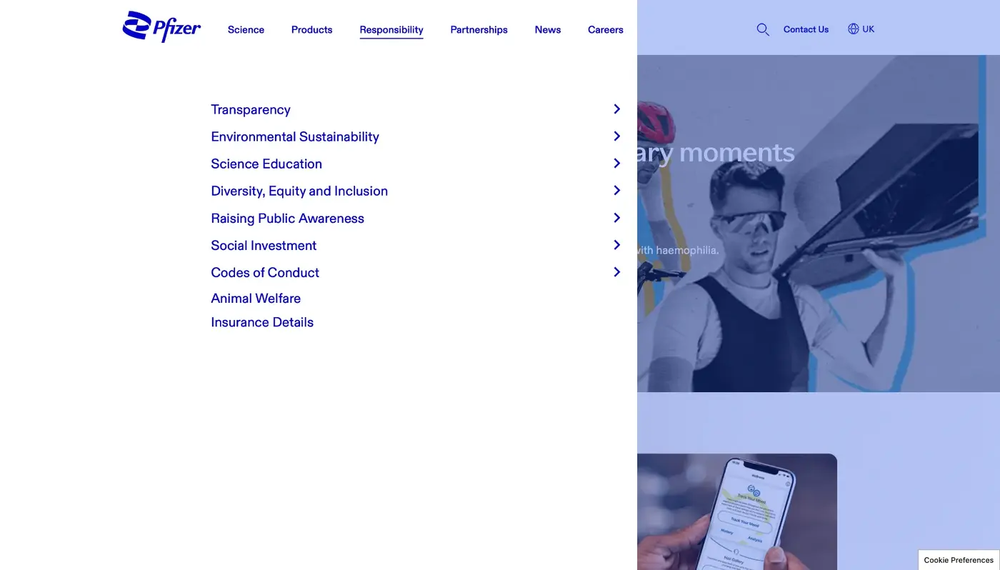
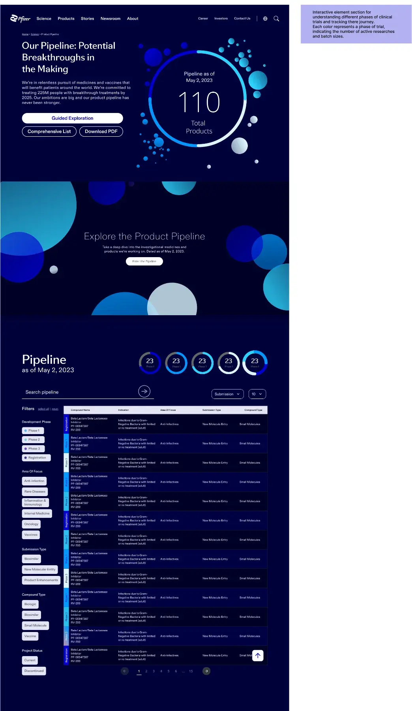
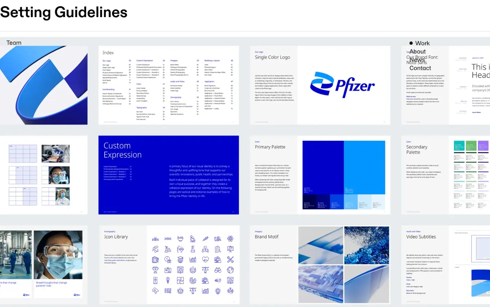

Case study 04 · Pfizer.com Pfizer · via TCS · 2024–25
Pfizer’s new brand, live on pfizer.com
I led the UI of pfizer.com through Pentagram’s rebrand, and turned it into the design system Pfizer’s internal pages and dashboards now follow.

Problem
Pfizer’s first formal brand, created by Pentagram, had to work across a very large website and many teams, accessibly and consistently.
What I did
As UI lead, I set up the UI system and components for pfizer.com and led the offshore design team building it.
Result
pfizer.com is live in the new brand, and its system now guides Pfizer’s internal pages and dashboards.
Shared as a portfolio sample. Some screens are simplified, and confidential client data is not shown.
01 Context
Pfizer’s first formal brand, and a website to carry it
Pentagram built the identity around one purpose: breakthroughs that change people’s lives. I brought it to pfizer.com, so that everyone can use the site, including people with colour blindness, low vision and ADHD.
02 Brand on screen
Four values, four website rules
Pentagram turned Pfizer’s four values into four traits. I turned each trait into a rule the website could follow, and gave motion one job: to support meaning, never to decorate.
| Value | Trait | Website rule |
|---|---|---|
| Courage | Daring | Big type and bold blue, used with confidence |
| Excellence | Focused | One action per section, nothing competing for it |
| Equity | Compassionate | Readable for colour blindness, low vision and ADHD |
| Joy | Spirited | Motion that brings warmth to the science |
Two typefaces, one voice
Pentagram’s identity runs on two typefaces. Pfizer Tomorrow is drawn from the wordmark, warm and humanist, and carries the masterbrand. Pfizer Diatype is a superfamily by Dinamo, with more than 76 styles across normal, condensed, compressed, expanded, mono and semi-mono widths, and support for over 200 languages. On pfizer.com I gave each a clear job: Tomorrow for headings H1 to H5, Diatype for eyebrows, body, navigation and data.

- Pfizer blue is the anchor, with a wider spectrum of secondary hues kept for product brands.
- Illustration is built from simple geometric forms, circles, ovals and rounded squares, standing in for science, people and medicine.
- Photography shows real patients in real places, lit naturally.
- Charts use rounded forms, a simple colour order and one type family.
03 Design system
What I set up, and how teams use it
Tokens, components and guidelines that started on pfizer.com and became the corporate design UI for Pfizer’s other pages and dashboards. The rules were simple enough to repeat: blue means clickable, black means static, and every state is designed, not left to the browser.
| Level | Example | Size / line height |
|---|---|---|
| H1 | Breakthroughs | 72 / 86 |
| H2 | Our pipeline | 52 / 62 |
| H3 | Clinical trials | 42 / 50 |
| H4 | Areas of focus | 32 / 38 |
| Body | Body text, readable at 20px | 20 / 27 |
- Type scale in Pfizer Tomorrow and Pfizer Diatype
- Blue for clickable, black for static
- Buttons in every state: default, hover, focused and disabled
- Grids, palettes, icon library, imagery and video subtitles

Rebuilt as a Figma library
The client files stay with Pfizer, so I rebuilt the system from the live site as a Figma library for this portfolio. Every colour, gap and radius in it is a token, and every component follows the theme of the frame it sits in.









04 Live screens
The system, on pfizer.com




Every component was specified for desktop, iPad and mobile: article cards go from three across to two to one, and the mega-menu becomes a full-screen list on mobile.
05 My role
Leading the offshore design team
| What it meant | |
|---|---|
| Adapt | Translated Pentagram’s identity into web type, colour and interaction rules |
| Include | Designed for colour blindness, low vision and ADHD from the first component |
| Lead | Led the TCS team through the rebrand, reviewing every page against the system |
| Scale | Set up the guidelines that internal pages and dashboards now follow |
06 Impact
The website became the template
Once pfizer.com went live, its system became Pfizer’s corporate design UI. Internal pages, dashboards, the product pipeline and the newsroom now start from the same type, colour rules and components, instead of reinventing the brand.
Next case study · 05
CRAY →